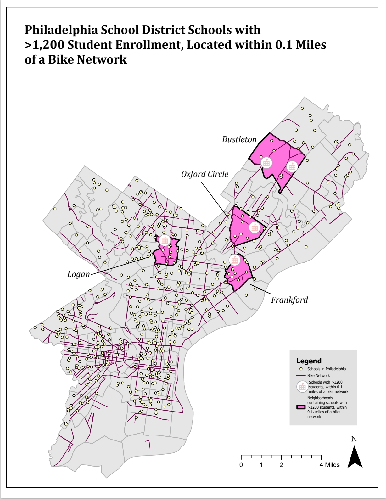
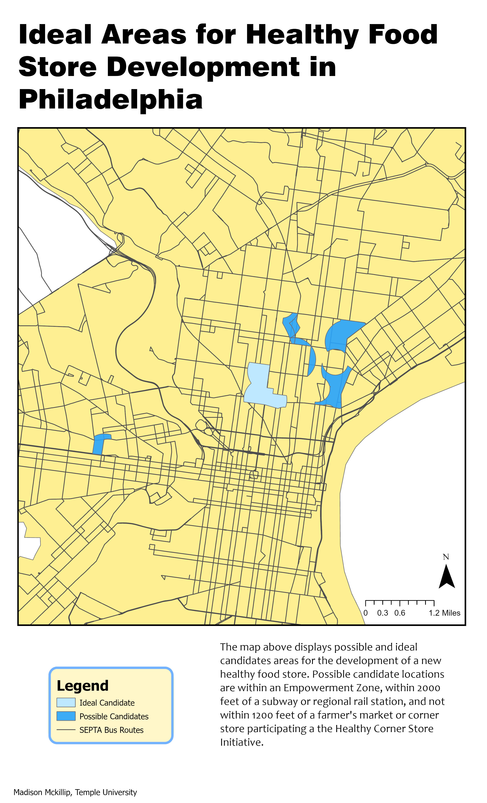
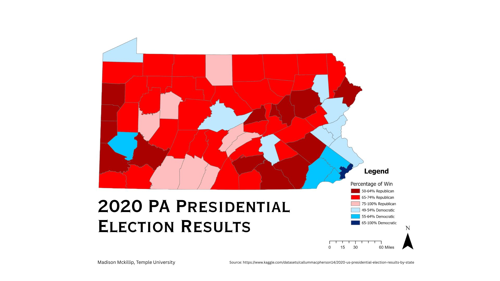

Portfolio



About
This past semester, I've made countless maps from countless learned skills in ArcGIS Pro. The three maps above showcase the best of the analytical, design, and problem-solving skills that I've developed over the past four months.
I hope you enjoy the maps I've chosen and the processes behind their creation!
Copyright © Your Website 2023